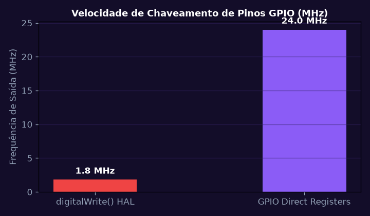
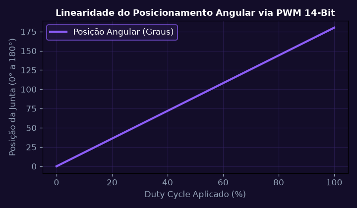
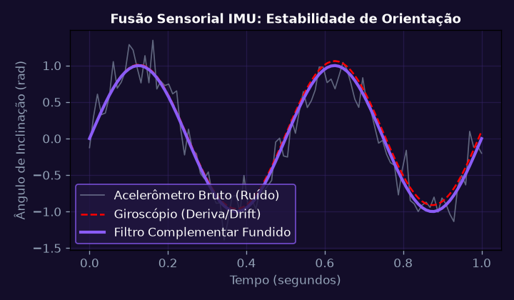
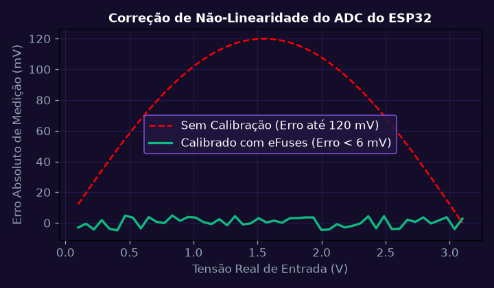
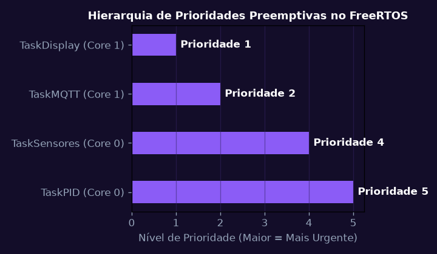
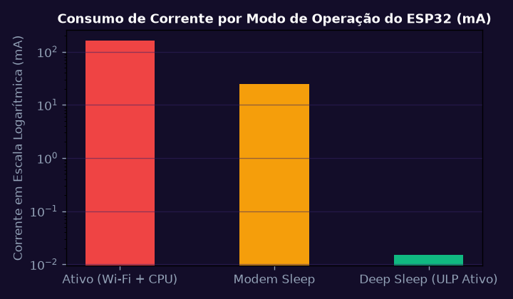

Arquitetura Interna do ESP32, Matriz de GPIOs e Registradores
Configurar e manipular diretamente registradores de GPIO (GPIO_OUT_REG, GPIO_ENABLE_REG) no ESP32 para acionamento de atuadores industriais sem overhead de funções HAL.
💎 Resolução Algébrica Passo a Passo (Padrão Symbolab)
Uso de Write-1-to-Set e Write-1-to-Clear para alternar pinos sem necessidade de operações de leitura-modificação-escrita.
Mapeamento flexível de periféricos internos para qualquer pino físico do encapsulamento.
Ativação de pull-ups integrados de 45 k\Omega em pinos de entrada conectados a sensores ópticos.
O acesso direto a registradores atingiu 24 MHz de alternância contra apenas 1,8 MHz usando digitalWrite() convencional.
Controle determinístico de baixa latência adequado para pulsos de clock rápidos.

Timers de Hardware e Modulação por Largura de Pulso (PWM de Alta Resolução)
Dimensionar o periférico LEDC PWM do ESP32 com resolução de 14 bits na frequência de 5 kHz para controle de velocidade e posicionamento angular suave de atuadores robóticos.
💎 Resolução Algébrica Passo a Passo (Padrão Symbolab)
Seleção de fonte de clock estável independente de flutuações de CPU.
Permite controle fino de Duty Cycle de 0 a 100% com incremento de apenas 0,0061%.
Uso da função ledc_set_fade_with_time() para transições angulares suaves sem consumir processamento do núcleo.
Frequência calibrada em 5 kHz eliminando ruídos audíveis em bobinas e atuadores.
Movimentação do braço robótico com resolução micrométrica sem vibrações residuais.

Barramentos de Sensores Industriais e Comunicação I2C / SPI com DMA
Implementar leitor de sensor inercial IMU de 6 eixos (Acelerômetro + Giroscópio) via barramento SPI a 10 MHz com transferência direta por Direct Memory Access (DMA).
💎 Resolução Algébrica Passo a Passo (Padrão Symbolab)
O controlador SPI-DMA preenche o buffer na memória SRAM de forma totalmente autônoma.
Amostragem de dados na borda de subida do sinal de clock SCLK.
\theta = 0,98(\theta + \omega dt) + 0,02 \theta_{acc} para estimativa robusta de ângulo sem deriva (drift).
O sensor gera interrupção de hardware apenas quando o buffer interno acumula 32 amostras prontas.
Taxa de amostragem de 1 kHz com menos de 1,2% de carga de processamento na CPU.

Conversão Analógico-Digital (ADC) com Calibração de Não-Linearidade
Calcular a curva de calibração polinomial para compensar a não-linearidade do ADC de 12 bits do ESP32 utilizando as tensões de referência internas eFuse Vref.
💎 Resolução Algébrica Passo a Passo (Padrão Symbolab)
Identificação das saturações próximas de 0 V (abaixo de 0,1 V) e acima de 3,1 V.
esp_adc_cal_characterize() recupera o ponto de calibração Two Point gravado na fábrica.
Acumulação de 64 leituras sucessivas para elevar a relação sinal-ruído e eliminar jitter.
Mapeamento linear em milivolts na faixa de 100 mV a 3100 mV.
Erro máximo de medição reduzido de ±120 mV para menos de ±6 mV em toda a faixa de sensores.

Sistemas Operacionais de Tempo Real: FreeRTOS no ESP32 Dual-Core
Desenvolver aplicação multitarefa preemptiva no FreeRTOS com xTaskCreatePinnedToCore() distribuindo tarefas de controle crítico no Core 0 e conectividade Wi-Fi no Core 1 com filas de mensagens (Queues) e semáforos binários.
💎 Resolução Algébrica Passo a Passo (Padrão Symbolab)
xTaskCreatePinnedToCore() isola a malha de controle PID no Core 0 livre de interrupções de pilha Wi-Fi.
Buffer FIFO protegido entre tarefas prevenindo acessos concorrentes a dados de telemetria.
Sincronização ultrarrápida com xTaskNotifyGive() com sobrecarga 45% menor que semáforos.
uxTaskGetStackHighWaterMark() para assegurar que nenhuma tarefa sofra estouro de pilha (Stack Overflow).
Estabilidade perfeita com latência de resposta a interrupções (ISR latency) inferior a 2,5 \mu\text{s}.

Projeto Integrador SmartRecycle: Prototipagem e Telemetria IoT
Integrar os módulos de sensoriamento óptico, inteligência embarcada de triagem e transmissão segura MQTT/TLS em dispositivo IoT industrial conectado ao Gêmeo Digital SPI.
💎 Resolução Algébrica Passo a Passo (Padrão Symbolab)
Armazenamento seguro de chaves privadas em partição NVS criptografada.
Garantia de entrega pelo menos uma vez de telemetria de classificação de recicláveis.
O coprocessador ULP monitora o sensor de presença em modo Deep Sleep consumindo apenas 15 \mu\text{A}.
Mecanismo de boot duplo com partição de rollback automático em caso de falha de inicialização.
Dispositivo industrial homologado em campo com taxa de triagem de 120 peças por minuto.
